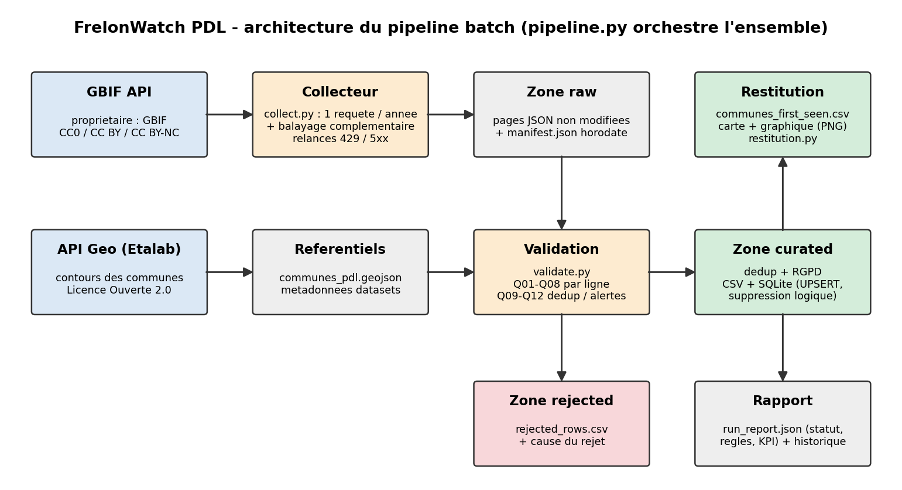
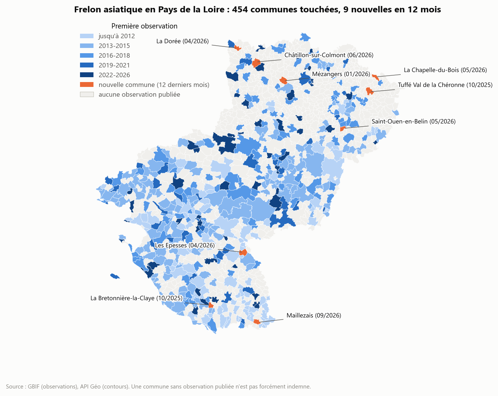
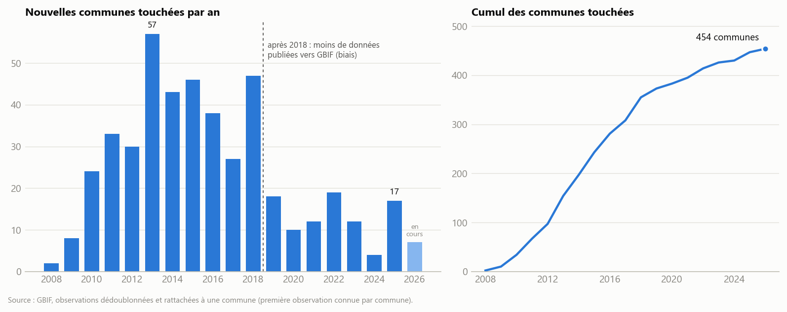

Collecte, contrôle qualité et restitution des observations du frelon asiatique en Pays de la Loire
Le frelon asiatique (Vespa velutina), arrivé en France en 2004, décime les ruchers de l'Ouest. Le moyen de lutte le plus efficace est le piégeage des fondatrices au printemps (février à mai), à condition de savoir où piéger. Or les signalements sont dispersés entre plusieurs plateformes (iNaturalist, CardObs, INPN, inventaire national Frelon du MNHN…), souvent publiés en double, et jamais rattachés à une commune.
Utilisateur cible : un apiculteur ou un technicien d'un groupement de défense sanitaire apicole (GDSA). Décision éclairée : choisir, avant la saison, les communes où poser en priorité les pièges de printemps.
| Source | Rôle | Accès | Licence |
|---|---|---|---|
GBIF, API occurrence/search | Observations (source principale) | REST public, sans clé, pagination | Par ligne : CC0, CC BY 4.0, CC BY-NC 4.0 |
API Géo (Etalab), /communes?codeRegion=52 | Contours des 1 228 communes (référentiel) | REST public, GeoJSON | Licence Ouverte 2.0 |
Filtres : espèce taxonKey=1311477, région gadmGid=FRA.12_1. Ce dernier filtre a été préféré au champ
stateProvince, saisi librement par les fournisseurs et donc peu fiable. La plateforme « Frelon asiatique » du MNHN a été
écartée : elle n'a pas d'API stable, donc la collecte ne serait pas reproductible (voir ADR-001).
Licences : le projet est non commercial, donc les trois licences sont compatibles. Une règle contrôle la licence de chaque
ligne, et attributions.csv fournit le titre, le DOI et le lien de chaque jeu de données, comme l'exige CC BY.
RGPD : la zone raw contient le nom ou le pseudonyme de l'observateur sur 1 609 lignes, parfois une adresse. Ces champs ne servent pas la
question (principe de minimisation) : ils sont supprimés dès la sortie de la zone raw, et les coordonnées sont arrondies à environ
100 m. La zone raw n'est jamais versionnée, et une règle vérifie à chaque exécution qu'aucun nom ne fuit dans les sorties.

pipeline.py (une commande).| Étape | Module | Rôle |
|---|---|---|
| Collecte | collect.py | Une requête par année (plafond GBIF de 100 000 résultats), pages de 300 lignes, relances exponentielles sur les erreurs 429 et 5xx, balayage complémentaire pour les observations sans année |
| Zone raw | data/raw/ | Réponses écrites octet pour octet, plus un manifest.json (requête, comptes annoncés et reçus, horodatage) |
| Profilage | profile_data.py | Types, valeurs manquantes, doublons, plages de valeurs |
| Standardisation | transform.py, reference.py | Dates hétérogènes normalisées (UTC, intervalles, précision), licences normalisées, rattachement à une commune (point dans un polygone) |
| Validation | validate.py | Règles Q01 à Q12 ; lignes invalides dirigées vers la zone rejected, avec leur cause |
| Chargement | load.py | CSV en écriture atomique, SQLite en UPSERT avec suppression logique |
| Restitution | restitution.py | Carte des communes, graphique de progression, indicateurs, rapport d'exécution |
docs/adr/)| ADR | Décision | Alternative principale écartée |
|---|---|---|
| 001 | API GBIF comme source unique d'observations | Exports manuels de la plateforme MNHN (non reproductibles) |
| 002 | CSV + SQLite locaux, sans serveur | PostgreSQL / PostGIS : disproportionné pour environ 2 000 lignes, et impose une installation |
| 003 | Clé métier spatio-temporelle, UPSERT et suppression logique | Clé gbifID (rate les doublons inter-plateformes) ; base écrasée à chaque exécution (perte d'historique) |
Toute la configuration (espèce, zone, seuils, chemins) est dans config/pipeline.yaml, sans secret. La commande
python src/pipeline.py --collect collecte puis traite tout en environ 30 secondes. La collecte est reproductible et
vérifiée : une exécution depuis un clone neuf du dépôt donne les mêmes indicateurs. Les erreurs 4xx arrêtent proprement le
traitement, et les erreurs 429 et 5xx sont relancées avec un délai croissant (2, 4 puis 8 s).
Cas particulier traité : l'API ne permet pas de filtrer sur une année absente. 17 observations sans date exploitable n'étaient donc renvoyées par aucune requête annuelle. Un balayage complémentaire sans filtre d'année les récupère : l'extraction ne garde de ce balayage que les identifiants absents des tranches annuelles. La règle Q11 vérifie que le total reçu égale le total annoncé par GBIF.
Grain : une ligne représente un signalement de présence du frelon asiatique en un lieu (arrondi à ~100 m) à une date
donnée, toutes sources confondues. Le contrat config/data_contract.yaml (v1.0) décrit les 31 champs publiés (type,
caractère obligatoire, valeurs autorisées), la clé primaire, les champs exclus pour le RGPD et les règles. Le dictionnaire commenté
avec des exemples est dans docs/fiche_projet.md.
| ID | Dimension | Condition | Action | Échecs |
|---|---|---|---|---|
| Q01 | Complétude | Coordonnées présentes | Rejeter | 0 |
| Q02 | Domaine | Point dans une commune de la région | Rejeter | 8 |
| Q03 | Validité | Date lisible, ≥ 2004, non future, précision ≤ 1 an | Rejeter | 16 |
| Q04 | Domaine | Incertitude de localisation ≤ 5 km | Rejeter | 107 |
| Q05 | Validité | Espèce Vespa velutina, rang espèce ou infra-spécifique | Rejeter | 0 |
| Q06 | Conformité | Licence CC0, CC BY ou CC BY-NC | Rejeter | 0 |
| Q07 | Cohérence | Donnée de présence (pas d'absence) | Rejeter | 0 |
| Q08 | Complétude | Incertitude de localisation renseignée | Signaler | 343 |
| Q09 | Unicité | Clé métier unique | Dédoublonner | 109 |
| Q10 | Fraîcheur | Dernière observation de moins de 120 jours | Alerter | 0 (29 j) |
| Q11 | Complétude | Reçu = annoncé (tranches + balayage) | Alerter | 0 |
| Q12 | Conformité | Aucun nom d'observateur dans les sorties | Alerter, statut FAIL | 0 / 1 002 |
Rejets : les 129 lignes rejetées sont conservées dans data/rejected/rejected_rows.csv, avec la liste des règles
violées et le fichier raw d'origine. Q04 domine (107 lignes) : au-delà de 5 km d'incertitude, la commune ne peut pas être attribuée de
façon fiable. Les rejets Q02 sont des points sur l'estran ou juste hors limite, car les contours GADM de GBIF diffèrent légèrement de
ceux de l'INSEE. Un mode --demo-invalid injecte une ligne piégée par règle (Q01 à Q07) et un faux doublon : chacun est
intercepté par la règle attendue.
Doublons : une même observation peut arriver par deux plateformes, chacune avec son propre identifiant GBIF. La clé métier est un hash SHA-1 de (espèce, jour, latitude et longitude arrondies à 3 décimales). Les lignes de même clé sont fusionnées : on garde la localisation la plus précise, puis la licence la plus ouverte, et on conserve les identifiants d'origine. 109 doublons ont été fusionnés ; les 20 groupes inter-plateformes sont tous confirmés par l'algorithme de clustering de GBIF, ce qui valide la clé de façon indépendante.
Sorties curated (data/curated/) : observations.csv (1 539 lignes), communes_first_seen.csv
(une ligne par commune), progression_annuelle.csv, attributions.csv, et la base
frelon_pdl.sqlite, qui contient les mêmes tables.
Idempotence : les CSV sont écrits de façon atomique (fichier temporaire puis remplacement). La base utilise la clé métier comme
clé primaire, une contrainte UNIQUE sur l'identifiant GBIF, et un UPSERT. Rejouer le pipeline donne inserted: 0.
Historisation : une observation retirée de GBIF n'est pas effacée. Elle passe à is_active = 0, avec l'identifiant
de la collecte de disparition, et elle est réactivée si elle réapparaît. Ce marquage n'a lieu que si la collecte est complète (Q11 à 0),
pour qu'une collecte partielle ne « supprime » rien à tort. Entre le 23/09 et le 12/10, la base a reçu 9 nouvelles observations,
sans aucune suppression.
Rapport d'exécution (reports/run_report.json, historisé dans reports/runs/) : lignes en entrée,
acceptées, rejetées et fusionnées, échecs par règle, alertes, colonnes personnelles supprimées, indicateurs, statistiques de la base,
figures produites, durée et statut global. La dernière exécution est en PASS_WITH_WARNINGS, uniquement à cause des 343
signalements Q08. Le projet compte 34 tests unitaires (règles, dates, dédoublonnage, RGPD, pagination, relances, UPSERT,
historisation, restitution).


Réponse à la question : le frelon a atteint 454 communes de la région. La progression a été rapide entre 2013 et 2018 (environ
43 nouvelles communes par an), puis apparemment plus lente (4 à 19 par an). Le front actuel se situe surtout en Mayenne et dans la
Sarthe (6 des 9 communes récentes), avec quelques communes en Vendée. Pour l'apiculteur, communes_first_seen.csv
donne aussi le nombre d'observations de printemps par commune, utile pour caler la date de pose des pièges.
attributions.csv contient 5 noms d'auteurs de jeux de données, exigés par la licence CC BY. C'est une
exception documentée au contrôle Q12.git clone https://github.com/behaghelroch-dev/frelon-pdl.git && cd frelon-pdl python -m venv .venv # puis activer le venv pip install -r requirements.txt python src/pipeline.py --collect # collecte + traitement complet (~30 s, ~50 s la 1re fois) python src/pipeline.py --demo-invalid # démonstration des règles qualité python -m pytest -q # 34 tests
Python 3.11 ou plus récent, accès Internet, aucune clé d'API. Le README détaille les prérequis, les sorties attendues et le dépannage.
Usage de l'IA : un assistant (Claude Code) a été utilisé, notamment pour le balayage complémentaire, l'historisation SQLite, la restitution graphique, la vérification depuis un clone neuf, la rédaction des ADR et la mise en forme de cette synthèse. La déclaration détaillée est dans le README. Chaque ajout a été exécuté et couvert par des tests.